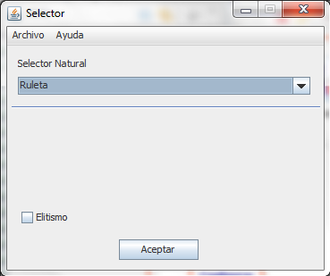

El selector es quien se encarga de elegir que cromosomas serán usados para la próxima generación.
Al pisar sobre el botón "Selector" (Sin las comillas) se abre una ventana como la siguiente:
Existen 3 tipos de selectores definidos en JGAL_GUI:
Ruleta
Torneo
Ranking
JGAL_GUI permite utilizar elitismo con cualquiera de los métodos de selección permitidos.